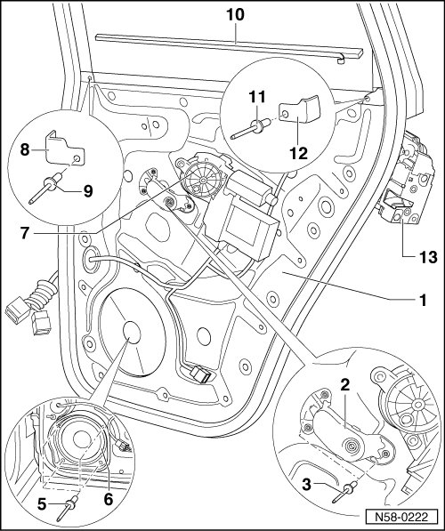

Assembly Carrier Components Assembly Overview
Rear Door
Assembly Carrier Components Assembly Overview

1 Assembly carrier
2 Angle bracket
3 Hollow rivet
• Quantity: 2
4 Expanding nut
5 Hollow rivet
• Quantity: 4
6 Speaker
7 Window Regulator Motor
• Removing and Installing, refer to --> [ Window Regulator Motor ] Rear Door Windows
8 Cap
• For forward transition area from assembly carrier to window frame
9 Hollow rivet
10 Sealing strips
• Is adhered before assembly carrier and window frame are assembled.
• Self-adhesive
• Cut to length of 780 mm (31 in.).
11 Hollow rivet
12 Cap
• For rear transition from assembly carrier to window frame
13 Door lock
• Removing and Installing, refer to --> [ Door Handle and Door Lock Assembly Overview ]